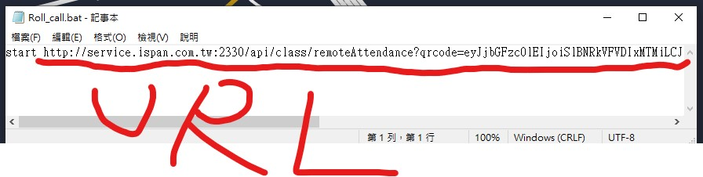

魯夫

aaaapple Mauris mauris ante, blandit et,
bee Mauris mauris ante, blandit et, ultrices a, suscipit eget, quam. Integer ut neque. Vivamus nisi metus, molestie vel, gravida in, condimentum sit amet, nunc. Nam a nibh. Donec su